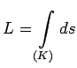
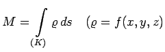
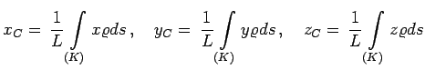
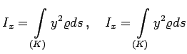
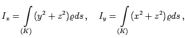
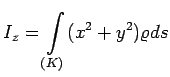
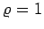

| Länge eines Kurvenstückes K |  |
| Masse eines inhom. Kurvenstücks K |  Dichtefunktion) |
| Schwerpunktkoordinaten |  |
| Trägheitsmomente einer ebenen Kurve in der x,y-Ebene |
 |
| Trägheitsmomente einer Raumkurve bezüglich der Koordinatenachsen |
  |
| Im Falle homogener Kurven ist in den obigen Formeln  einzusetzen. | |